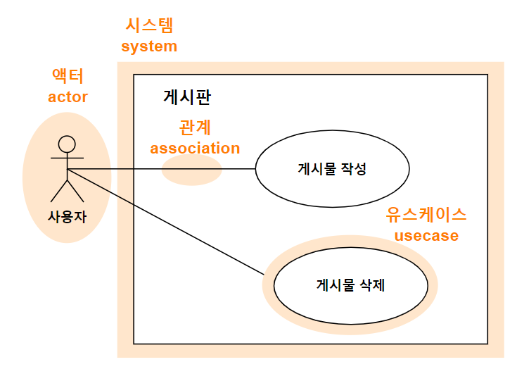
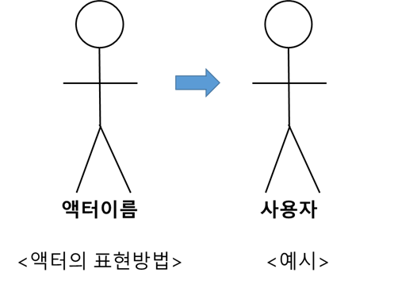

유스케이스다이어그램은 유스케이스와 액터 및 이들간의 관계를 한눈에 보여줍니다. 또한 사용자의 관점에서 시스템의 서비스 혹은 기능 및 그와 관련한 외부 요소를 보여주는 다이어그램입니다.
유스케이스, 액터, 시스템, 관계는 유스케이스 다이어그램의 구성요소입니다. 이제 다이어그램의 구성요소를 자세히 알아 보겠습니다.
액터(actor)는 사람(역할에 따라 구분됨), 컴퓨터 시스템, 조직 등과 같이 행위를 하는 어떤 것입니다. 시스템의 외부에 있으면서 시스템과 직접 상호작용을 하는 모든 것을 가리킵니다.
액터는 명사로 명명하며, 액터의 이름을 정할 때에는 사용자의 입장에서 이해하기 쉬운 용어를 사용합니다. 시스템과 대화하는 역할(Role)을 기준으로 판단하여 액터를 결정합니다. 액터 중에서 업무 시스템의 주요 기능성을 사용하는 액터를 주(primary)액터라고 하고, 업무 시스템의 주요 기능성을 보조하는 기능성을 사용하는 액터를 보조(secondary) 액터라고 합니다.
